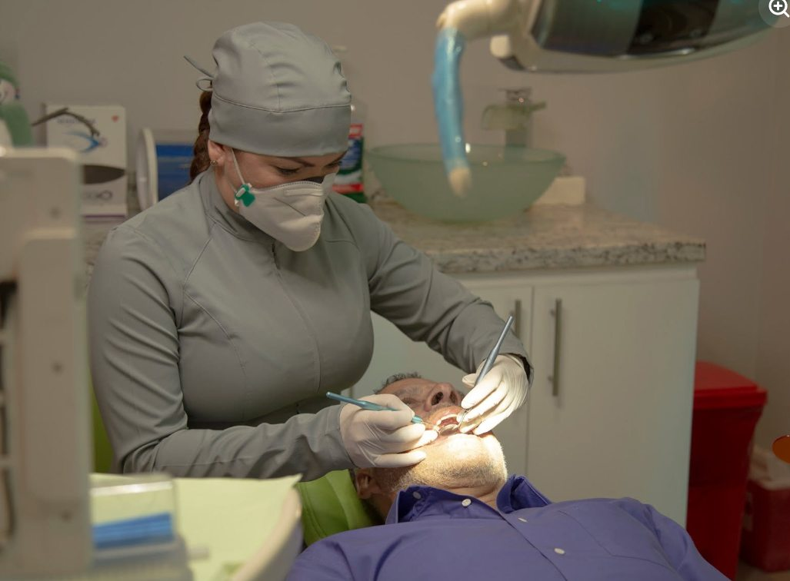

01 / ATENCIÓN
Cuidado profesional y cercano
Una atención realizada con dedicación y cuidado, para acompañarte durante tu visita a la clínica.
ODONTOSALUD · CLÍNICA DENTAL
Una solución integral para tu salud bucodental, con la atención de OdontoSalud Dra. Alejandra Moya.
01 / CONOCE ODONTOSALUD
Tu salud bucodental merece tiempo, atención y una conversación cercana.
En OdontoSalud Dra. Alejandra Moya puedes consultar sobre atención odontológica y nuestro centro radiológico, y coordinar tu visita directamente con el equipo.
Queremos que encuentres la información que necesitas para dar el siguiente paso con tranquilidad.
Conócenos en Instagram02 / CONOCE EL ESPACIO
Un recorrido por la clínica, sus espacios y la atención cercana para pacientes de todas las edades.
Desliza para explorar · También puedes usar las flechas y el botón de pausa.
03 / OPCIONES DE ATENCIÓN
Explora las áreas que encontramos en la información pública de OdontoSalud. Toca, enfoca o pasa el cursor sobre cada tarjeta para ver los detalles.
El perfil de la clínica anuncia atención odontológica integral y centro radiológico. Algunas áreas de abajo aparecen en publicaciones anteriores; confirma con el equipo cuáles están disponibles actualmente.
El directorio del Colegio de Cirujanos Dentistas registra a la Dra. Alejandra Moya en odontología general.
DIRECTORIO PROFESIONALUna publicación de la clínica de 2023 mencionó evaluaciones dentales para niños y adolescentes. Consulta la disponibilidad actual.
PUBLICACIÓN 2023 · CONFIRMAREn una publicación de 2022 se presentó una ortodoncista del equipo. Confirma si hay agenda y profesional disponible actualmente.
PUBLICACIÓN 2022 · CONFIRMAREl perfil publicó contenido informativo sobre endodoncia en 2021. Consulta si el servicio se ofrece actualmente.
PUBLICACIÓN 2021 · CONFIRMARPublicaciones de 2021 y 2023 mencionaron implantes y puentes fijos. Pregunta al equipo por los tratamientos disponibles hoy.
PUBLICACIONES 2021–2023 · CONFIRMARPublicaciones anteriores hablaron sobre limpiezas y blanqueamiento dental. Confirma alcance, disponibilidad y valoración con la clínica.
PUBLICACIONES 2021–2022 · CONFIRMAREl perfil de OdontoSalud anuncia un centro radiológico. Consulta los estudios disponibles y sus requisitos antes de tu visita.
PERFIL DE LA CLÍNICA · CONSULTAR¿Buscas un tratamiento específico?
Consultar por WhatsAppMÁS INFORMACIÓN PARA TU VISITA
Si necesitas un estudio radiológico, conversa primero con el equipo de OdontoSalud. Te indicaremos qué opciones están disponibles y qué información debes llevar.
04 / ESTAMOS PARA ORIENTARTE
Escríbenos y coordinemos juntos.
El equipo confirma tu cita personalmente.
Abre nuestro WhatsApp y cuéntanos si deseas una cita o información sobre nuestra atención.
El equipo te compartirá las opciones y los detalles para coordinar tu visita.
Antes de visitarnos, confirma con la clínica la fecha, la hora y la ubicación.
RESOLVAMOS TUS DUDAS
Información práctica para acercarte a OdontoSalud.
Escribe al WhatsApp 8844-5279 para consultar disponibilidad. Tu cita queda coordinada cuando el equipo te confirme la fecha y la hora.
Contacta al equipo para conocer los tratamientos odontológicos disponibles y coordinar una valoración según tu consulta. Puedes preguntar también por el centro radiológico.
Consulta previamente con la clínica el estudio disponible, sus requisitos y la información que debes llevar. El equipo te orientará antes de tu visita.
De lunes a viernes, de 8:00 a. m. a 6:00 p. m.; sábados, de 8:00 a. m. a 1:00 p. m. Confirma disponibilidad por WhatsApp antes de visitarnos.
Solicita la ubicación exacta y la información sobre precios directamente por WhatsApp. El equipo te indicará lo necesario para coordinar tu atención.
ODONTOSALUD · DRA. ALEJANDRA MOYA
Lunes a viernes: 8 a. m. – 6 p. m.
Sábados: 8 a. m. – 1 p. m.